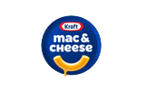

Key conclusions
The company
$24.9 billion in FY2025 net sales, roughly 35,000 employees across 40 countries, co-headquartered in Pittsburgh and Chicago. Western Europe Operations runs from Amsterdam's Zuidas hub — Kraft Heinz's largest office outside North America and its Benelux headquarters.
The role
Digital Transformation Product Owner, Amsterdam (Job ID R-106362), inside Western Europe Operations. Owns the change agenda for demand planning and IBP (Integrated Business Planning) forecasting across European Business Units, the roadmap for the demand planning system, and the value capture model behind it.
Why now
North America's forecasting has run through a five-year, four-phase build with o9 Solutions, reaching 48.2% autonomous adoption by March 2025. Kraft Heinz's own demand planning lead has said Europe "required a more adaptive approach" — this role is the first dedicated owner of turning that approach into a shared regional roadmap.
Contents
- IBP — the five-step process
What Integrated Business Planning is and the five monthly reviews that make it up. - Tools behind the forecast
The four platforms named in the posting, and Kraft Heinz's own real stack. - What feeds the forecast
The demand signals a volume and commercial forecast has to account for. - 3 structural challenges
Why this role exists now, grounded in Kraft Heinz's own published transformation. - Role scope & Olga's experience
Four accountability areas mapped to Olga's supply chain and IBP background. - KPI framework & benchmarks
Forecasting and value-capture measures, benchmarked against Kraft Heinz's own results and external research.
What "autonomous forecasting" means
An autonomous (or "touchless") forecast is a forecast that reaches the monthly IBP financial call and is used as-is, with no planner manually reviewing or overriding the system's number. The alternative is a manually reviewed forecast, where a planner checks the machine-generated number and adjusts it before it counts. Kraft Heinz tracks this as one straight percentage: the share of its total forecast volume that goes through fully autonomous, with no human touch. That share was close to zero in 2022. By March 2025 it had reached 48.2% — meaning just under half of all Kraft Heinz forecasts now need no manual adjustment at all, up from virtually none three years earlier.
Source: Adis Sulejmanovic, Head of Digital Supply Chain Transformation and Strategy, Kraft Heinz. o9 Solutions, "How Is Kraft Heinz Using AI to Transform Demand Planning?", published 7 May 2025.
Kraft Heinz's 8 product platforms — share of FY2025 net sales
Kraft Heinz manages its portfolio as 8 consumer-driven platforms rather than by individual brand; this is what the volume and commercial forecast this role owns is actually forecasting
45%
Taste Elevation

16%
Easy Ready Meals
8%
Meats
8%
Hydration
7%
Cheese
—
6%
Substantial Snacking
5%
Desserts
3%
Coffee
Percentages are approximate, derived from each platform's FY2025 net sales against Kraft Heinz Company's total FY2025 net sales, and are independently rounded — they do not sum to exactly 100%. Logos are Kraft Heinz's own published brand marks, shown as a recognisable example of each platform, not an official one-brand-per-platform mapping Kraft Heinz itself publishes.
Sources: Kraft Heinz Q4 & FY2025 results · Bullfincher, Kraft Heinz revenue by platform · Kraft Heinz Form 10-K, FY2025 · logos via kraftheinzcompany.com/brands.
Employees
35,000
Across roughly 40 countries. Kraft Heinz Company, most recent Form 10-K.
Amsterdam Hub
450+
Largest EMEA office; Benelux headquarters & global supply-chain hub, opened 30 May 2018. Invest in Holland
Autonomous Forecast Adoption
48.2%
Up from near-zero in 2022
Reached March 2025. o9 Solutions case study
Five years, four phases: how Kraft Heinz got to 48.2%
Kraft Heinz's own published account of its demand planning transformation with o9 Solutions, North America
| Phase | Years | What changed |
|---|---|---|
| 1. Proof of concept | 2019–2020 | o9's machine-learning platform tested; the entire implementation was run remotely during the pandemic. |
| 2. Centralization & capability building | 2021–2022 | Demand planning moved from a decentralized structure to a centralized model, with a Center of Excellence and cross-functional "agile pods". |
| 3. Human-in-the-loop optimization | 2022–2024 | Planner expertise fed into the machine-learning models — described internally as "translating tribal knowledge into machine learning". |
| 4. Autonomous forecasting | 2024–2025 | 48.2% of forecasts reached full autonomy, moving straight through the IBP financial call without manual adjustment. |
Source: Adis Sulejmanovic, Head of Digital Supply Chain Transformation and Strategy, Kraft Heinz, speaking at the Gartner Supply Chain Symposium. o9 Solutions, "How Is Kraft Heinz Using AI to Transform Demand Planning?", published 7 May 2025.
Why this role sits in Amsterdam
"Change must align with market maturity. Not every region is ready for AI at the same pace. North America underwent a comprehensive rollout, while EMEA required a more adaptive approach." — Marcelo Iuki, Customer Excellence and Demand Planning Lead, Kraft Heinz. o9 Solutions, "Why Kraft Heinz's Demand Forecast Accuracy Is at an All-Time High", 24 March 2025.
01
Process
IBP (Integrated Business Planning) — the five-step process this role runs
What IBP is
- Integrated Business Planning is a monthly decision-making cycle, run through five diarized reviews, that reconciles portfolio, demand, supply and finance into one plan owned by the executive team.
- It grew out of S&OP (Sales & Operations Planning): S&OP balances demand and supply over a 6–12 month horizon inside operations, while IBP makes financial integration mandatory, adds product portfolio and strategy, and extends the horizon to 2–5 years under senior-executive ownership.
| Step | Purpose |
|---|---|
| 1. Portfolio Review | Connects business strategy to the products and services that will be brought to market — what will be available to sell, and what resources that requires. |
| 2. Demand Review | Captures changes to the demand plan since the previous month and what supply needs to do in response — building inventory, reserving capacity. |
| 3. Supply Review | Turns the demand plan into an operational supply response across the network's key capacity and cost parameters. |
| 4. Integrated Reconciliation | Reconciles portfolio, demand, supply and financial views into one plan; gaps against financial and strategic targets are quantified and scenario-tested. |
| 5. Management Business Review | The senior executive team decides on the issues and gap-closing scenarios surfaced by the Integrated Reconciliation step. |
This five-step cycle is the Oliver Wight standard IBP model used across consumer goods and manufacturing. Kraft Heinz's own materials confirm it runs a monthly "IBP financial call" as the culmination of this cycle; its internal names for each review step are not publicly disclosed.
02
Technology
Tools behind the forecast
The four platforms named in the posting
Any of these — or a similar demand planning / IBP platform — is named as acceptable Product Owner background
| Platform | What it is |
|---|---|
| o9 Solutions | AI-powered "Digital Brain" planning platform spanning demand forecasting, supply planning and IBP — the platform Kraft Heinz itself has run since 2019. |
| Blue Yonder | Long-established supply chain suite with strong retail roots; its Luminate platform covers machine-learning demand forecasting and control towers. |
| SAP Integrated Business Planning | Cloud-based IBP module inside the SAP ecosystem, built to connect forecasting and planning directly to execution. |
| FuturMaster | French planning suite spanning demand planning, supply planning, S&OP and trade promotion — rebranded Sunstice in 2026. |
Kraft Heinz's own real planning stack: o9 Solutions for demand forecasting and IBP since 2019, and separately OMP Unison Planning for end-to-end material and supply planning across 8,000+ SKUs and 300+ facilities. The surrounding data stack runs on Snowflake, Power BI and Alteryx.
03
Inputs
What feeds the forecast — the elements demand planning has to account for
The demand signals behind a volume & commercial forecast
The standard input set any demand planning or IBP process reconciles before a number reaches the Demand Review
| Input | Why it moves the forecast |
|---|---|
| Historical demand / point-of-sale data | The statistical baseline — actual consumption and shipment history, not just orders received. |
| Seasonality & retail calendar | Recurring cyclical patterns tied to the calendar — holidays, back-to-school, grilling season — that a naive average misses. |
| Promotions & trade activity | Price cuts, features and displays temporarily lift volume well above the baseline, then pull it back down after. |
| New product introductions & phase-outs | No demand history exists yet — forecasts have to be built from analogous items and launch plans instead. |
| Pricing & commercial actions | List price changes and mix shifts between pack sizes change volume independently of the underlying trend. |
| Distribution changes | New retailer listings or delistings shift the addressable shelf before consumer demand itself has changed. |
| Supply & capacity constraints | What the network can actually produce and ship feeds back into what the forecast should ask for. |
| External & macro signals | Weather, category trends, competitor activity and broader consumer sentiment. Kraft Heinz's own transformation drew on 5 million+ external data sets to rebuild its baseline after traditional models broke down. |
The eight-input structure follows the standard demand-planning framework referenced in Oliver Wight's Demand Review and the Institute of Business Forecasting's glossary. The external-data example is Kraft Heinz's own, not a generic illustration.
Role Analysis
3 structural challenges this role is built to solve
01
Autonomous forecasting stops at the regional border
- North America reached 48.2% autonomous adoption by March 2025 through a five-year, four-phase build
- Kraft Heinz's own demand planning lead has said Europe "required a more adaptive approach" — no equivalent regional build exists yet
02
A global roadmap without a European voice yet
- The role's own brief asks to "align European priorities with the global demand planning and IBP agenda" — meaning that alignment does not exist today
- This is a newly posted role, with no prior Digital Transformation Product Owner for Western Europe Operations
03
The value capture model still has to be built
- The role's own brief asks the incoming owner to define the KPIs and value capture model from scratch, then build the business cases on top of it
- North America's programme shows what is achievable — $50 million-plus in working capital released — but that model has not been shown to exist for Europe
04
Role scope
Digital Transformation Product Owner — four accountability areas & Olga's experience
The posting asks for 5+ years in demand planning, IBP, supply chain or a related digital transformation role, plus a Bachelor's degree in Business, Supply Chain, Engineering, Data or a related field. Olga holds a postgraduate PDEng (Professional Doctorate in Engineering) in Logistics Management & Supply Chain from TU Eindhoven and an MSc in Applied Mathematics, built on 19 years across IBM, Nike, adidas and Richemont.
01
Change Management Across Distributed Markets
Lead adoption of new forecasting ways of working across European Business Units, embedding change that is sustained and measurable.
Adoption rate
Rollout cadence
Stakeholder buy-in
Olga's experienceChange Manager on a customer relationship management system rollout for InBev at IBM. At Richemont, drove change management and adoption across 100+ people, technology and process projects, influencing a matrix organisation up to executive level across 26 European countries.
02
Demand Planning & Forecasting Process Ownership
Own the process redesign behind volume and commercial forecasting, and the roadmap for the demand planning and IBP forecasting engine.
Process design
Forecast accuracy
Roadmap ownership
Olga's experienceAt IBM, delivered supply chain process design, material requirements planning and demand planning for four manufacturers — Numico, Avebe, SGV Group and Stiho. Process transformation expert on SAP APO (Advanced Planning & Optimization, SAP's planning suite ahead of SAP IBP) for the Dutch Ministry of Transport.
03
Cross-Regional Roadmap Alignment
Align European priorities with the global demand planning and IBP agenda, building joint roadmaps with cross-regional teams.
Global alignment
Shared standards
Roadmap delivery
Olga's experienceAt adidas, part of the European Union Supply Chain Management leadership team, driving the EU omni-channel and supply chain vision. At Richemont, directed strategy across 12 luxury Maisons and 26 European countries, reporting to the EU CEO and Global Chief Digital Officer.
04
Value Capture, KPIs & Business Cases
Define the value capture model for demand planning and IBP investment, tracking realised benefits and building business cases for future enhancements.
P&L ownership
KPI design
Business case development
Olga's experienceAt Richemont, held P&L responsibility for a €150 million e-commerce business, owning key performance indicators including cost-to-sales ratio, operational performance and service-level agreements, and driving year-on-year revenue growth of 30 to 250 percent.
05
KPIs
KPI (Key Performance Indicator) framework & benchmarks
Forecast accuracy, benchmarked by horizon
Accuracy is not one number — it degrades the further out the forecast reaches. Kraft Heinz's own results, set against the nearest published external benchmark at each horizon
| Horizon | Kraft Heinz actual | External benchmark |
|---|---|---|
| Weekly (item-location, near-term) | +10.4 percentage points improvement since 2022, reached March 2025 | No horizon-matched external figure independently verified — see note below |
| 4-week lag (1-month-ahead) | 70% forecast accuracy | 85% median monthly demand forecast accuracy, all industries (APQC) |
| 8-week lag (2-months-ahead, production) | +11% improvement, supporting labor and production scheduling | No horizon-matched external figure independently verified |
Accuracy decaying with horizon is a documented pattern, not a Kraft Heinz-specific claim — but a clean, independently sourced external benchmark broken out by the exact same horizons Kraft Heinz reports (weekly, 4-week, 8-week) could not be verified. APQC's 85% figure is a general cross-industry monthly median, not a 4-week-lag-specific number, and is shown as the closest verified comparator rather than a direct match. Where the table says "no horizon-matched external figure," that reflects a genuine gap in what is publicly available, not an omission.
Sources: o9 Solutions, "Why Kraft Heinz's Demand Forecast Accuracy Is at an All-Time High", 24 Mar 2025 · o9 Solutions, Kraft Heinz case study, 7 May 2025 · APQC, Average monthly demand forecast accuracy.
Forecasting & autonomous planning
Forecast accuracy
The core forecasting measure this role is judged on — see the horizon breakdown above for how it moves with lead time.
Benchmark: APQC — 85% median monthly demand forecast accuracy across industries; top performers reach 95%, bottom performers 80%.
Kraft Heinz actual: 70% at a 4-week lag; +10.4 percentage points improvement at the weekly item-location level since 2022.
Kraft Heinz actual: 70% at a 4-week lag; +10.4 percentage points improvement at the weekly item-location level since 2022.
Autonomous ("touchless") forecast adoption
Share of forecasts moving through the IBP financial call without manual adjustment — the role's own ask to "scale autonomous forecasting."
Kraft Heinz actual: 48.2% by March 2025, up from near-zero in 2022.
Benchmark: Gartner — 70% of large organisations expected to adopt AI-based supply chain forecasting by 2030.
Benchmark: Gartner — 70% of large organisations expected to adopt AI-based supply chain forecasting by 2030.
Planner time savings
Time freed from manual forecast adjustment and returned to exception management and analysis.
Kraft Heinz actual: approximately 30% time savings for planners.
Benchmark: no independently verified external figure for planner time savings specifically from autonomous forecasting.
Benchmark: no independently verified external figure for planner time savings specifically from autonomous forecasting.
Forecast Value Added (FVA)
Measures which forecasting inputs and participants improve the forecast against a naive baseline — the standard IBP discipline for deciding where planner effort belongs.
Kraft Heinz actual: shifting from measuring forecast value-add alone toward model-adoption KPIs.
Benchmark: IBF's own guidance is to measure FVA against your own naive/statistical baseline, not an external cross-company number — there is no universal FVA benchmark to compare against.
Benchmark: IBF's own guidance is to measure FVA against your own naive/statistical baseline, not an external cross-company number — there is no universal FVA benchmark to compare against.
Value capture & inventory
Working capital released
Direct output of the value capture model this role is accountable for building, from the demand-forecasting programme.
Kraft Heinz actual: $50 million-plus released.
Benchmark: McKinsey — up to 20% inventory reduction is the external ceiling for fully scaled autonomous planning in consumer goods.
Benchmark: McKinsey — up to 20% inventory reduction is the external ceiling for fully scaled autonomous planning in consumer goods.
Inventory reduction
Realised benefit from a parallel Kraft Heinz supply-planning programme, run separately from the demand-forecasting work above.
Kraft Heinz actual: approximately $90 million year-over-year reduction; over 80% of inventory held within target limits.
Benchmark: McKinsey — up to 20% inventory reduction ceiling (same external range as above).
Benchmark: McKinsey — up to 20% inventory reduction ceiling (same external range as above).
Waste reduction
Tracked separately across Kraft Heinz's two planning programmes.
Kraft Heinz actual: 45% reduction (new product development, bias, C-SKU) on the demand-forecasting programme; approximately 5% on the supply-planning programme.
Benchmark: no independently verified external cross-company waste-reduction figure specific to autonomous planning.
Benchmark: no independently verified external cross-company waste-reduction figure specific to autonomous planning.
Revenue & supply chain cost impact
The two value-capture measures the role's own business cases would need to quantify beyond inventory and waste.
Kraft Heinz actual: not separately disclosed at platform or regional level.
Benchmark: McKinsey — up to +4% revenue and up to -10% supply chain cost for consumer goods companies at full scale.
Benchmark: McKinsey — up to +4% revenue and up to -10% supply chain cost for consumer goods companies at full scale.